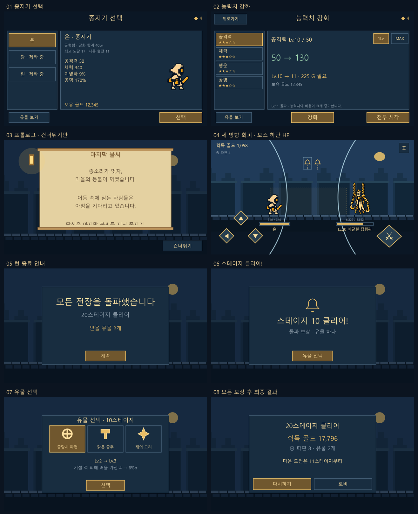
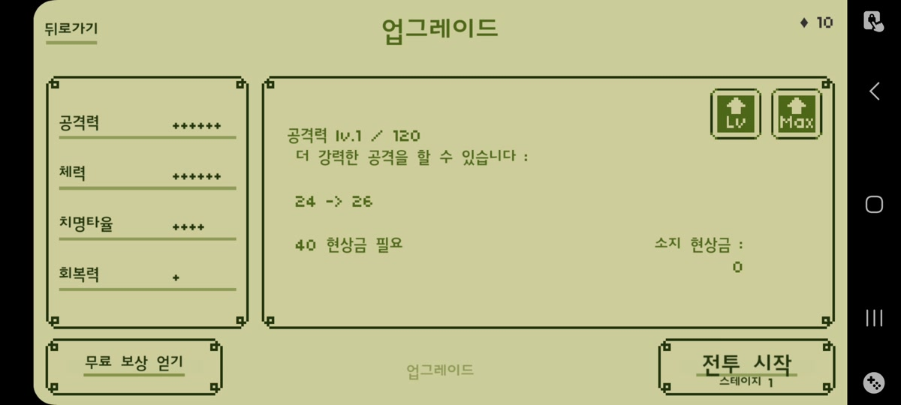
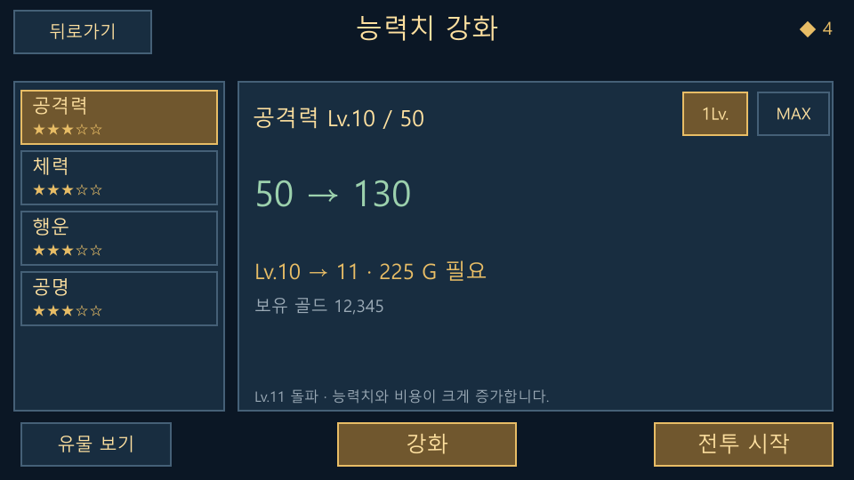
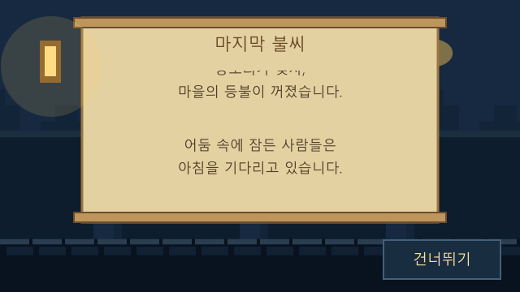
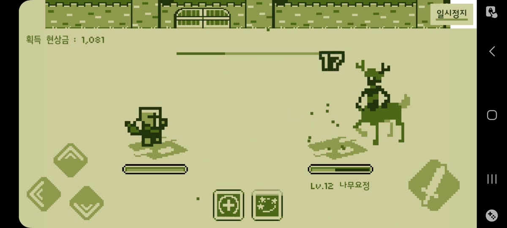
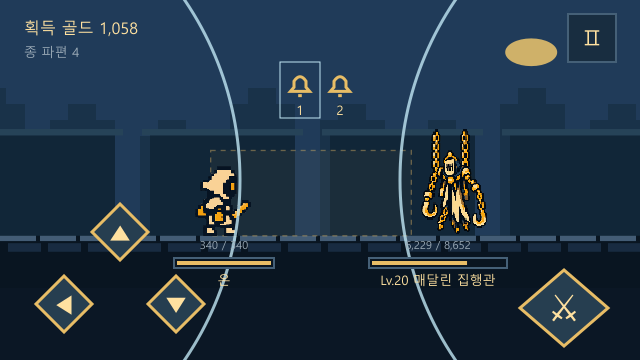
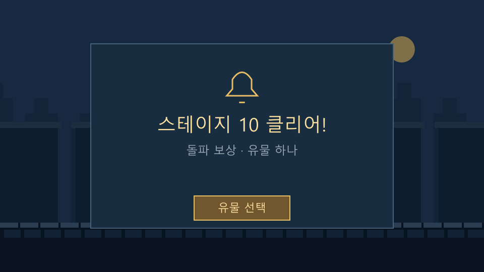
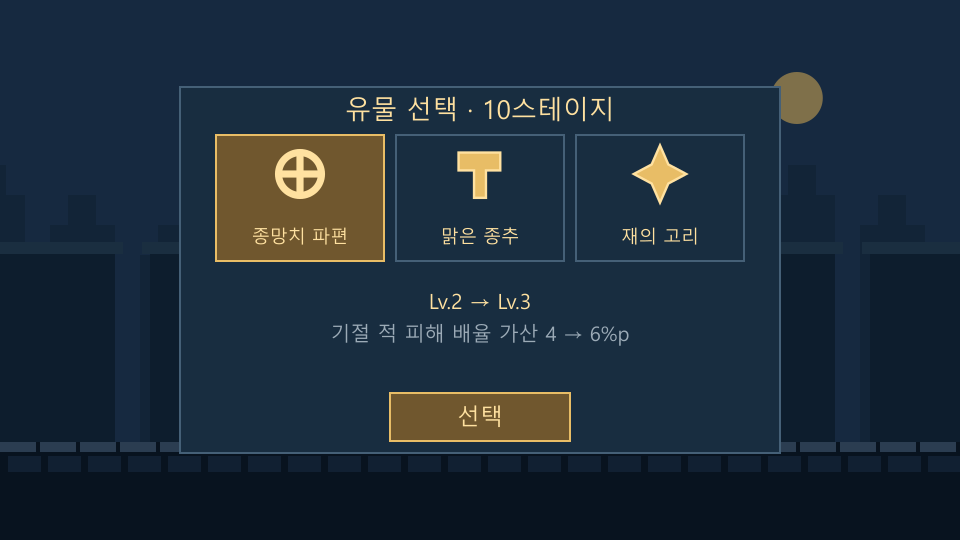

이 문서가 최신 결정입니다. v8의 네 방향 회피, 720ms 단타 유지, 로비 통합 강화, 프롤로그 추가 버튼, 전투 중 유물 선택은 아래 변경안으로 대체합니다. 원작 관찰·수치 근거는 v8 분석 기록에 그대로 남겼습니다.
01. 요청을 반영한 변경 요약
| 항목 | v8 / 현행 기준 | v8.1 기획 |
|---|---|---|
| 선택·업그레이드 UI | 로비에서 캐릭터와 네 스텟을 한 화면에 표시 | 선택: 왼쪽 영웅 목록 + 오른쪽 상세. 강화: 왼쪽 스텟/별 + 오른쪽 한 스텟 상세. 선택 버튼으로 화면 이동. |
| 프롤로그 | 일시정지 / 다음 문단 / 건너뛰기 | 18초 자동 위쪽 스크롤. 건너뛰기 하나만 표시. |
| 회피 입력 | ↑ ← ↓ → | ↑ ← ↓ 세 개만. 오른쪽 버튼·키 입력·전방 회피 요구 패턴 제거. |
| 예고·타격 | 0 / 240 / 480 → 720ms, 연타 480ms | 제안: 0 / 300 / 600 → 900ms, 연타 750ms. 회피 판정창과 적 대기 시간도 함께 조정. |
| 전투 HP | 상단 적 HP 배치 제안 | 일반 적·중간보스·보스 모두 캐릭터 아래 고정 HP, 그 아래 Lv.와 이름. 상단 보스 HP 없음. |
| 종 파편 | 5·15 중간보스 1개, 10·20 보스 3개 | 중간보스 0개, 10·20 보스 각 4개 제안. 구간 전체 4개는 유지. |
| 유물 선택 | 보스 처치 직후 선택하고 이동 | 보스 처치 때 후보를 보관. 런 종료 → 스테이지 N 클리어! → 유물 선택 → 다음 보상 → 최종 결과. |

02. 종지기 선택과 능력치 강화를 분리
종지기 선택: 목록 → 상세 → 선택
레퍼런스의 왼쪽 세로 목록과 오른쪽 큰 상세 패널을 따릅니다. 목록을 누르면 오른쪽 정보만 바뀌고, 하단 선택을 눌렀을 때 해당 종지기의 강화 화면으로 넘어갑니다. 목록을 누르는 것만으로 출전하거나 재화를 사용하지 않습니다. 골드·종 파편은 현재의 공용 지갑을 유지합니다.
| 영역 | 표시 정보 | 행동 |
|---|---|---|
| 왼쪽 목록 | 온 / 담 / 린, 제작 중 표시 | 잠긴 종지기도 정보는 볼 수 있으나 선택 버튼은 비활성. |
| 오른쪽 상세 | 이름·역할, 강화 레벨 합계, 최고 도달, 다음 출전 지점, 실제 능력치, 캐릭터 초상, 보유 골드 | 온은 실제 제작 상태, 담·린은 제작 중 유지. 원작의 종합 평가 점수는 별도 검증 없이 만들어 붙이지 않음. |
| 하단 | 유물 보기 / 선택 | 유물 보유·장착은 기존 방식. 선택은 강화 화면으로 이동. |
강화: 왼쪽 능력치 하나를 선택하고 오른쪽에서 판단
왼쪽에는 공격력·체력·행운·공명과 각 성장 적성 별을 표시합니다. 오른쪽은 선택 스텟 하나의 Lv./50, 현재→다음 값, 필요 골드, 보유 골드, 돌파 안내를 크게 표시합니다. 더하기 버튼 4개가 나열된 통합 로비 구조는 사용하지 않습니다.
오른쪽 위의 1Lv. / MAX는 구매 견적 모드입니다. 하단 중앙 강화를 눌러야 구매합니다. 우하단 전투 시작은 현재 선택한 캐릭터의 체크포인트에서 출전합니다. 예산과 스타별 성장식은 v8 분석의 현행 정수 값을 유지합니다.
| 상태 | 규칙 | 미리보기 예 |
|---|---|---|
| 1Lv. | 한 단계의 실제 수치·비용 표시. 선택 변경만으로 구매하지 않음. | 공격 Lv.10→11, 50→130, 225 G. |
| MAX | 현재 골드로 가능한 연속 강화 횟수를 가격표에서 합산. 돌파 비용도 모두 포함. 최대 Lv.50까지만. | 12,345 G / Lv.10이면 Lv.20까지 10회, 합계 9,633 G. 남은 2,712 G로 Lv.21 구매 불가. |
| MAX 확인 | 현재→목표 레벨, 전체 효과, 총비용을 항상 표시. 버튼 한 번으로 견적의 횟수만 구매. | MAX가 무료 최대 레벨·별점 MAX라는 의미로 보이지 않게 “현재 골드로 N회” 표시. |
| 골드 부족 | 필요 금액·부족분 표시. 자동 파편 사용 없음. 교환을 원하면 별도 진입·기존 견적 확인. | 강화 실패로 레벨·골드·파편이 변하지 않음. |
| 최대 레벨 | MAX, 강화 비활성. 다음 값·비용을 생성하지 않음. | Lv.50 도달 시 목표 Lv.51이 표시되지 않음. |
| 행운 | 치명타와 골드 증가를 함께 표시. 한쪽만 변화해도 실제 이익 확인. | 치명타 8→8%, 골드 +8→+9%. |
구매 직전 레벨·지갑 버전·가격표가 화면의 견적과 같은지 확인합니다. 다른 처리로 값이 달라졌다면 새 견적을 표시하고 기존 클릭으로 더 큰 구매를 실행하지 않습니다.
숫자는 정수이며, Lv.10→11 / 20→21 등의 돌파 후에도 강화 비용이 계속 큰 폭으로 상승하는 기존 원칙을 유지합니다. 레퍼런스의 돌파 직후 비용이 다시 낮아지는 규칙은 가져오지 않습니다.


03. 프롤로그는 자동 진행과 건너뛰기만
기존 이야기·배경·두루마리·좌측 램프는 유지합니다. 텍스트는 두루마리 안에서 자동으로 위쪽으로 이동하며 전체 18초 뒤 선택 화면으로 넘어갑니다. 화면 안에서 누를 수 있는 것은 우하단 건너뛰기 하나입니다. 일시정지, 다음 문단, 문단 점·페이지 바는 제거합니다.
첫 실행은 프롤로그→선택→강화→출전 순서로 정리합니다. 이후 실행은 선택 화면을 엽니다. 기존 저장의 프롤로그 확인 여부를 유지하고, 이미 봤던 사용자를 업데이트 때문에 다시 강제 재생하지 않습니다. 앱이 가려지면 자동 진행 시계도 정지하며 복귀 후 이어집니다. 모션 감소 설정에서는 같은 네 문단을 고정 위치에서 부드럽게 교체합니다. 제품 화면에 추가 조작 버튼을 넣지 않습니다.
| 순서 | 이야기 |
|---|---|
| 1 | 종소리가 멎자, 마을의 등불이 꺼졌습니다. |
| 2 | 어둠 속에 잠든 사람들은 아침을 기다리고 있습니다. |
| 3 | 당신은 마지막 불씨를 지닌 종지기. 꺼진 등불을 밝히고 다섯 종을 깨우세요. |
| 4 | 성문 너머, 첫 번째 종이 있습니다. 이제 당신의 여정이 시작됩니다. |

04. 세 방향 회피와 새 공격 박자
입력과 피할 공격을 함께 정리
레퍼런스처럼 좌하단에 위·왼쪽·아래 세 마름모 버튼을 둡니다. 키보드는 ↑/←/↓ 및 W/A/S를 대응시키고, →/D는 회피 입력에서 제거합니다. 상단 공격의 아래 버튼은 숙이기가 아니라 검으로 쳐내는 동작입니다. 공격 버튼으로 쳐내도록 바꾸지 않습니다.
| 적의 공격 | 예고 모양 | 입력·동작 |
|---|---|---|
| 찌르기 thrust | 적 앞에서 플레이어 몸통까지 이어지는 금빛 직사각형 | ← : 뒤로 빠지기 |
| 하단 베기 low_sweep | 바닥 가까운 가로 직사각형 | ↑ : 점프 |
| 상단 베기 high_sweep | 상체 높이의 가로 직사각형 | ↓ : 제자리에서 검으로 쳐내기 |
| 기존 바깥쪽 휘두르기 outer_arc | 기존에는 오른쪽으로 들어가야 피할 수 있던 영역 | 패턴 풀·초반 교육·필수 방향 검사에서 제거. 해당 패턴 슬롯은 high_sweep로 대체하고 중복 항목 제거. |
버튼만 지우고 맞을 수밖에 없는 공격을 남기지 않습니다. 전방 회피를 가정한 콜라이더·회피 판정·저장 중 패턴·튜토리얼 문구까지 함께 이관합니다. 새 공격 모션 제작 대신 현재 승인된 공격 모션을 사용하되 예고 영역과 공격 궤적을 세 패턴에 맞춥니다.
1스테이지는 위 점프, 2는 왼쪽 회피, 3은 아래 쳐내기를 첫 공격으로 소개합니다. 4는 새 방향 교육을 없애고 세 패턴 단타 복습으로 바꿉니다. 5의 첫 연속 공격 안내 패널은 기존대로 확인 후 바로 재개합니다. 데이터의 쳐내기 키 parry는 아래 입력에 연결하며 공격 입력과 혼동하지 않습니다. 현재 1~4 고정 교육 방향 검증은 1~3 교육 + 4 혼합 규칙으로 수정해야 합니다.
타이밍 제안값
Last Bell 제안 영상에서 일반 적 준비는 약 0.8~1.0초, 20층 연속 타격 간격은 약 0.7~0.8초로 관찰됐습니다. 정확한 원작 판정창은 알 수 없습니다. 아래 900/750/240/90ms는 이 관찰을 참고한 우리 게임의 초기 조정값입니다.
| 항목 | 현재 구현 | v8.1 제안 |
|---|---|---|
| 방향 하나의 예고 | 720ms, 0/240/480 시작 | 900ms, 0/300/600 시작. 각 깜빡임 ON 100ms. |
| 연타 간격 | 480ms | 750ms |
| 파동 | 타격 전 600ms, 후속 파동이 이미 진행된 상태로 표시 | 모든 파동 750ms. 직전 타격 순간 다음 파동 시작. |
| 일반 회피 허용 | 타격 전 160ms | 타격 전 240ms, 이후 복귀 120ms |
| 완벽 회피 허용 | 타격 전 마지막 60ms | 마지막 90ms. 타격 후 입력 구제는 넣지 않음. |
| 완벽 회피 반격 기회 | 500ms | 1,200ms, 공격 1회에 사용. 새 완벽 회피는 남은 시간에 더하지 않고 갱신. |
| 플레이어 공격 | 접촉 200ms / 간격 500ms | 유지. 영상의 사용자 연타 속도를 최소 쿨다운으로 오인해 느리게 만들지 않음. |
| 패턴 | 방향별 깜빡임 시작(ms) | 타격(ms) | 파동 시작(ms) |
|---|---|---|---|
| 단타 | 0 / 300 / 600 | 900 | 150 |
| 2연타 | 1: 0/300/600 → 2: 900/1200/1500 | 1,800 / 2,550 | 1,050 / 1,800 |
| 3연타 | 1: 0/300/600 → 2: 900/1200/1500 → 3: 1800/2100/2400 | 2,700 / 3,450 / 4,200 | 1,950 / 2,700 / 3,450 |
모든 방향을 세 번씩 순서대로 예고한 다음 공격합니다. 종 하나는 타격 하나이고, 현재 타격 종을 강조하며 완료된 종은 같은 자리에 흐리게 남깁니다. 금빛 히트박스·중앙으로 모이는 양쪽 파동·완벽 회피 시 정중앙 원형 확산은 유지합니다.
파동 원점은 화면 바깥 좌우 12.5%, 중앙까지 반경은 화면 폭의 62.5%입니다. 750ms 중 처음 20%=150ms는 화면 밖에서 자랍니다. 단타의 파동은 150ms에 시작해 300ms(두 번째 깜빡임)에 가장자리로 들어오고 900ms에 중앙 접촉합니다. 첫 타와 후속 타의 속도·가시 시간이 같아집니다.
공격 묶음 사이의 숨 고르기
| 종류 | 마지막 타격 → 다음 묶음 첫 예고 | 단타가 계속될 때 접촉 간격 |
|---|---|---|
| 일반 적 | 4,800ms | 5,700ms |
| 중간보스 | 3,600ms | 4,500ms |
| 보스 | 2,700ms | 3,600ms |
기준은 마지막 실제 타격입니다. 다음 묶음이 2연타면 1,800ms, 3연타면 2,700ms의 예고를 전부 추가하므로 실제 접촉 간격은 표보다 길어집니다. 이는 단순한 interval 숫자 교체가 아니라 스케줄 기준 변경입니다. 기절·사망·전장 전환이 발생하면 미처리 위협을 취소하고, 재개 시 완전한 새 예고부터 시작합니다. 긴 예고가 늘어지는지는 별도로 플레이테스트합니다.
반격보다 회피 입력이 우선입니다. 750ms 연타 사이에 반격을 하더라도 다음 회피를 막지 않도록 공격을 취소할 수 있어야 합니다. 완벽 회피는 현재처럼 화면 정중앙 파동과 기절 누적 보상으로 알리고, 공격 시 기준 위치로 즉시 복귀한 후 전진합니다. 추가 피해 배율은 이번 변경에 자동으로 붙이지 않습니다.
세 방향·넓어진 회피창·느려진 적 주기는 생존 난도를 낮춥니다. 이와 동시에 적 HP/피해를 일괄 상향하면 원인을 비교하기 어렵습니다. 먼저 현행 1~20 HP/피해를 유지한 상태에서 단타·2연타·3연타 성공률과 처치 시간을 측정하고 다음 조정을 결정합니다.
05. 전투 UI도 레퍼런스의 하단 배치로
전투 중심부를 비우고, 왼쪽 플레이어·오른쪽 적 아래에 각각 HP를 둡니다. 보스도 같은 하단 HP 규칙을 사용합니다. 적 HP 아래에는 Lv.20 매달린 집행관처럼 레벨과 이름을 한 줄로 표시합니다. 상단에 보스 이름·거대한 HP 막대를 다시 추가하지 않습니다.
막대와 이름은 공격·회피로 움직이는 스프라이트를 따라 흔들리지 않고 각자의 기준 위치에 고정합니다. 현재값/최대값 숫자는 막대 바로 위의 작은 보조 정보이고, 상단은 획득 골드·파편과 일시정지만 남깁니다. 종은 상단 중앙에 유지합니다. 피해 숫자는 캐릭터 주변, 완벽 회피 파동은 화면 중심을 사용합니다.
| 요소 | 960×540 (x,y,w,h) | 640×360 | 앵커·우선순위 |
|---|---|---|---|
| 플레이어 HP | (228,390,144,13), 아래 이름 y428 | (174,258,100,10), 이름 y285 | 플레이어 홈 위치 아래, 공격 이동에는 고정 |
| 적/보스 HP | (592,390,176,13), Lv.+이름 y428 | (369,258,138,10), Lv.+이름 y285 | 모든 적 공통. 보스라고 상단으로 이동하지 않음 |
| ↑ | (108,334,68,68) | (92,204,56,56) | Safe Area 좌하단 |
| ← | (40,418,68,68) | (36,276,56,56) | Safe Area 좌하단 |
| ↓ 쳐내기 | (176,418,68,68) | (148,276,56,56) | Safe Area 좌하단 |
| 공격 | (784,402,116,104) | (520,270,88,76) | Safe Area 우하단 |
| 종 | 중심 (480,106), 간격 48 | 중심 (320,86), 간격 40 | 화면 중앙 상단. 효과 아래에 가리지 않음 |
좌표는 노치 없는 프레임 기준이며 적용 시 실제 Safe Area 안에 배치합니다. 작은 화면의 버튼은 단순 비례 축소하지 않고 56px 이상을 유지합니다. 긴 보스 이름은 글자를 과도하게 줄이는 대신 HP 아래 최대 2줄로 확장하되 공격 버튼과 겹치지 않게 합니다. 원작 하단 스킬 두 개는 현재 게임에 해당 기능이 없으므로 빈 버튼으로 복제하지 않습니다.


06. 종 파편은 구간 보스에게만
| 대상 | 현재 | 제안 | 골드 |
|---|---|---|---|
| 1~4·6~9 등 일반 적 | 0개 | 0개 | 기존 유지 |
| 5·15 중간보스 | 1개 | 0개 | 기존 중간보스 골드 유지 |
| 10·20 구간 보스 | 3개 | 4개 | 기존 보스 골드 유지 |
보스 3→4개는 드랍 위치를 옮기면서 구간 경제를 유지하기 위한 제안입니다. 기존 10스테이지 구간 합계 1+3=4개가 앞으로는 보스 한 번에서 4개가 됩니다. 보스당 3개만 유지하면 첫 10클리어 때 4개짜리 두 번째 슬롯을 열지 못하므로 이 감소를 의도하지 않은 것으로 보고 보정합니다.
드랍 이펙트는 보스 처치 때만 표시합니다. 처치가 확정될 때 지갑과 이번 런 획득량에 4개를 한 번 기록하고, 사망해도 보유합니다. 종료 결과의 “종 파편 4”는 이미 받은 재화의 정산 표시이며 다시 지급하는 단계가 아닙니다.
| 진행 예 | 사용·보유 |
|---|---|
| 10 첫 처치 | 4개 획득 → 두 번째 슬롯 비용 4개 구매 가능 |
| 위 구매 후 20 첫 처치 | 4개 획득 → 세 번째 슬롯 비용 8개에는 4개 부족 |
| 11부터 재도전해 20 재처치 | 4개 추가 → 8개로 세 번째 슬롯 구매 가능 |
슬롯 비용 4/8개와 개방 조건 10/20은 유지합니다. 업데이트 전에 가진 파편은 회수하지 않습니다. 중간보스 처치 보상을 포함한 과거 지급은 소급 차감하지 않습니다.
07. 게임 오버 후 돌파 유물을 순서대로 정산
보스 처치: 골드·파편 지급 + 유물 보상 보관 → 다음 전장
런 종료 → 계속 → 스테이지 N 클리어! → 유물 선택 → 다음 미수령 보상 → 최종 결과
전투 중에는 유물 창을 띄우지 않습니다. 10 처치 후에는 필요한 기존 스토리 대화와 성문 이동만 진행하고 11로 갑니다. 20 처치는 프로토타입 완주이므로 런을 끝내고 같은 정산 흐름으로 들어갑니다. 유물 효과는 선택을 마친 다음 도전부터 적용되며 현재 런의 전투 스텟 스냅샷을 중간에 바꾸지 않습니다.
| 사례 | 끝난 뒤 표시 순서 | 다음 출발 |
|---|---|---|
| 1에서 출발 → 9 사망 | 게임 오버 → 최종 결과. 10 보상이 없으므로 유물 창 없음. | 1 |
| 1에서 출발 → 17 사망 | 게임 오버 → 10스테이지 클리어! → 유물 1개 → 최종 결과 | 11 |
| 1에서 출발 → 20 완주 | 완주 안내 → 10 클리어! → 유물 → 20 클리어! → 유물 → 최종 결과 | 11 (현재 프로토타입) |
| 11에서 재도전 → 20 완주 | 완주 안내 → 20 클리어! → 유물 → 최종 결과. 이번 런에서 처치하지 않은 10 보상은 없음. | 11 |
안내 화면에 계속 또는 유물 선택 버튼을 두어 사용자가 준비됐을 때 넘어갑니다. 유물은 기존 요청대로 작은 중앙 창, 후보 이미지+이름, 선택 후 하단 설명, 별도 선택 버튼을 유지합니다. 모든 보상 확정이 끝나야 최종 결과에 다시하기·로비 두 버튼이 나옵니다. 종료 안내의 사망 스테이지와 보상 안내의 클리어 스테이지를 같은 의미로 쓰지 않습니다.
유물 후보와 중복 획득
보스 처치 때 후보 ID 3개를 생성해 저장합니다. 다시 불러오기나 죽는 시점을 바꾸는 것으로 후보를 새로 뽑지 않습니다. 그러나 유물의 현재/다음 레벨은 각 보상을 열 때 그 시점의 보유 레벨을 사용합니다. 10과 20의 후보에 같은 유물이 있어도 앞선 보상 선택으로 Lv.2→3이 되면 뒤에서는 Lv.3→4를 보여줍니다.
v8에서 제안한 정수 유물 효과도 유지합니다. 새벽의 조각은 6/8/10/12/14%, 울림 고리·여명의 종인은 1/2/3/4/5% 단계로 비교합니다. 기존 유물 ID와 보유 Lv.는 보존합니다.
최대 레벨 후보는 해당 전장 골드로 전환하고 최종 결과에 합산합니다. 유물 창을 연 것과 확정한 것을 분리해 중복 클릭·화면 재생성·중간 재접속으로 두 번 받지 못하게 합니다.
전투 중 회복이 사라지는 부작용 방지
현행 코드에서는 유물 확정 직후 보스 구간 플레이어 체력을 전부 회복합니다. 선택 시점만 종료 뒤로 옮기면 10→11의 회복까지 사라집니다. 이 회복은 유물과 분리해 구간 보스 처치 확정 시 현재 최대 HP까지 회복하도록 옮깁니다. 플레이 중 유물 효과는 얻지 않되, 현재의 보스 돌파 회복은 유지합니다. 20 완주 시에는 다음 전투가 없어 회복 연출을 생략할 수 있습니다.


08. 저장·중단·예외 처리까지 함께 변경
현재는 보스 처치 직후 보상 하나만 들고 있어도 되는 구조입니다. 종료 후 여러 보상을 처리하려면 단일 offer를 그대로 미루는 것만으로는 부족합니다. 다음 상태 계약을 기획에 포함합니다.
| 상태 | 보관할 내용 | 실행 규칙 |
|---|---|---|
| 보스 처치 기록 | runId + cycle + bossStage 고유 보상 ID, 후보 ID 3개, 확정 여부 | 골드/파편 지급, 체크포인트, 보상 티켓을 같은 저장 단위로 기록. |
| 런 결과 | 종료 종류, 사망/완주 스테이지, 획득 골드/파편, 체크포인트 | 전투 종료 후 값 고정. MAX 유물 골드 전환만 추가 합산. |
| 정산 대기열 | 스테이지 오름차순 티켓 목록, 현재 위치, 이미 확정한 ID 집합 | 앞 티켓이 확정돼야 다음 티켓을 표시. 후보의 레벨 견적은 화면 진입 때 계산. |
| 확정 | 선택 ID, 실제 현재 Lv., 다음 Lv. 또는 MAX 골드 | 효과 지급 + 확정 기록 + 다음 위치 이동을 하나의 원자 저장으로 완료. UI 연타는 재지급 불가. |
| 프롤로그·패턴 변경 | 본 여부 유지, 전방 회피를 요구하는 남은 큐 폐기 | 재개 시 유효한 세 방향 패턴의 완전한 예고부터 시작. 오른쪽 입력을 요구하는 저장 상태를 재생하지 않음. |
| 상황 | 처리 |
|---|---|
| 보스 처치 직후 강제 종료 | 저장된 처치와 보상 티켓을 복구. 이미 받은 파편/골드 재지급 없음. 미저장 처치라면 마지막 정상 상태로 복원하며 두 상태를 섞지 않음. |
| 유물 선택 중 종료·재접속 | 동일 보상·후보·앞 보상 획득 결과를 복원. 로비로 우회해 새 런을 시작하지 못하게 함. |
| 같은 유물을 연속 선택 | 이전 보상 결과를 반영해 다음 레벨 견적 갱신. 처치 시점 Lv. 스냅샷과 다르다는 이유로 영구 거절하지 않음. |
| 수동으로 도전 종료 | 획득한 보스 보상이 있으면 같은 런 종료 정산으로 진입. 즉시 로비로 보내 미수령 보상을 버리지 않음. |
| 적 처치와 플레이어 사망이 같은 시각 | 동일 프레임의 피해 이벤트를 모두 판정한 뒤 종료 처리. 보스 HP도 0이면 처치 확정·파편·티켓을 한 번 기록하고 사망 결과를 우선 표시. 보상/체력 회복이 사망을 되돌리지는 않음. |
| 기존 버전의 보상 선택·스토리 저장 | 미수령 offer는 같은 ID로 대기열에 이관. 대화 상태와 보상 상태를 분리. 이미 지급한 과거 보상을 최고 도달 기록만으로 다시 만들지 않음. |
| 보상 없는 사망 | 빈 클리어 배너나 빈 유물 선택 화면 없이 바로 결과. |
| 20 완주 | 사망이 아니어도 정산 실행. 21 전투를 열지 않음. 현재 체크포인트 정책은 11 유지. |
죽은 뒤 보상 화면에 들어가면 playerHp=0이 정상입니다. 현재 저장 검증의 “RewardChoice는 생존 중 / offer.stage는 현재 stage와 같아야 함” 조건은 새 런 종료 상태에는 적용할 수 없습니다. 정산 상태를 전투 상태와 분리해 검증합니다. 스토리 대사가 offer.rewardId에 기대던 연결도 storyId/보스 처치 기록으로 분리합니다.
현행 10→11의 성문 연출·체크포인트, 승인된 몬스터 모션·피격 백색 효과, v7.2 사운드는 유지합니다. 스텟과 몬스터 수치의 장기 성장안은 v8 밸런스 분석을 별도 근거로 남기며 이번 UI/리듬 변경에 섞어 즉시 수정하지 않습니다.
09. 적용 순서·검수 기준
| 순서 | 실제 변경 대상 | 완료 기준 |
|---|---|---|
| 1. 화면 구조 | MvpView / MvpPresenter / FeedbackLayout 및 저장 프리팹 | 선택→강화 분리, 단일 스텟 상세·1Lv./MAX·잠금/부족/MAX 상태. 기존 데이터와 저장 유지. |
| 2. 입력과 공격 규칙 | GameCatalog, CombatGeometry, GameSession.Combat, PointerCommand, 입력 바인딩 | Forward 요구 패턴·튜토리얼·키 매핑 없음. ↑/←/↓ 모두 판정과 예고 영역 일치. |
| 3. 리듬과 배치 | CombatRhythmGraphic / BattlePresentation / SafeAreaLayout | 900ms/750ms 접촉 일치. 일반 적·보스 HP 하단 고정. 상단 중복 보스 막대 없음. |
| 4. 보상 정산 | SessionState, GameSession.Progression/Transitions/State/Economy | boss-only 파편, 여러 티켓, 종료 후 선택, 재접속·연속 중복·MAX 전환·수동 종료 보상 보존. |
| 5. 데이터·검증 | GameData 원본·export·스키마/검증·이전 저장 이관 | minibossFragments=0 / bossFragments=4를 허용하도록 기존 1/3 고정 검증도 수정. 이전 유물·파편 회수 없음. |
| 6. 프롤로그 | PrologueView / GameSession.Onboarding / 시작 진입점 | 건너뛰기 하나만. 18초 자동 이동, 종료 시 선택 화면. 기존 BeginRun 직행과 시작 순서 정합성 확인. |
플레이테스트에서 확인할 지표
새 계정과 11 체크포인트 계정에서 각각 단타·2연타·3연타의 일반/완벽/실패 비율, 방향 오입력, 첫 예고부터 처치까지 걸린 시간, 보스 한 전투의 입력 횟수를 기록합니다. 첫 실험은 현행 HP/피해·강화 가격을 고정하고 UI/리듬만 바꿉니다. 레퍼런스 수치를 복원했다고 주장하지 않고, 제안값의 실제 난도를 확인한 뒤 조정합니다.
640×360, 960×540, 1200×540에서 버튼 터치 영역과 긴 적 이름을 확인하고 실제 기기의 노치·엄지 가림·무음·이펙트 감소를 따로 검수합니다. 새로 만든 화면을 실행 중 별도 스크립트가 매 프레임 재배치하지 않도록 기존 레이아웃 소유자 한 곳에서 관리합니다.
이번 기획 산출물의 검수 범위
화면 PNG 렌더, 버튼 bounds, 프롤로그 단일 버튼, 세 방향 입력, 1Lv./MAX 견적, 0/1/2개 보상 정산, 중복 유물의 레벨 갱신, 중복 지급 차단, 직렬화 복구를 기획 모델에서 검사합니다. Unity·실제 모바일 플레이 검증이 끝났다는 의미는 아닙니다.
최신 미리보기검수 기록원본 영상 분석·수치 표